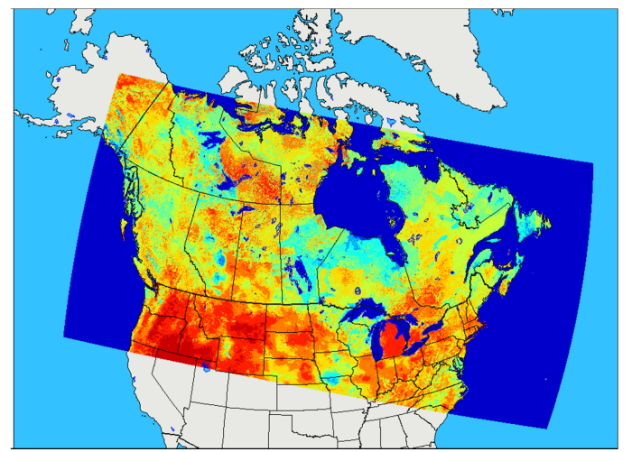

Glossary
Learn common terms used within this guide
CaLDAS is a land surface data assimilation system, which uses ancillary datasets, atmospheric forcings and various other types of observations to produce land surface analyses for numerical weather prediction systems (i.e. HRDPS). The purpose of CaLDAS-Sat is to ingest both satellite and ground-based observations,
while using land surface modelling and data assimilation techniques to generate optimal land surface states and fluxes. CaLDAS-Sat provides analyses of near-surface, surface, and sub-subsurface variables such as snow depth, 2-m atmospheric temperature, skin (land surface)
temperature and soil moisture over most of Canada at a 2.5-km resolution. Analyses from CaLDAS-Sat are constructed by assimilating observations for these variables, but relys on satellite data for soil moisture retrievals and snow cover extent. Other systems such as DHPS and HRDPS retrieve initial land-surface and soil moisture conditions from CaLDAS-Sat. The land-surface scheme used by CaLDAS-Sat is Soil, Vegetation, and Snow (SVS).
Learn more about land surface data assimilation systems here :
Current version: 2.1.3
CaLDAS-Sat is currently implemented at 2.5 km grid covering most of Canada, and is identical to HRDPS.

Currently CaLDAS-Sat data is only available through ECCC's internal Science Network.
click here for descriptions of various operational statuses
Technical note
Specifications
Change log
The End-User Licence for Environment and Climate Change Canada's Data Servers specifies the conditions of use of this data.
Learn common terms used within this guide

Discover tutorials and ways to use data

Learn how to access CMC products